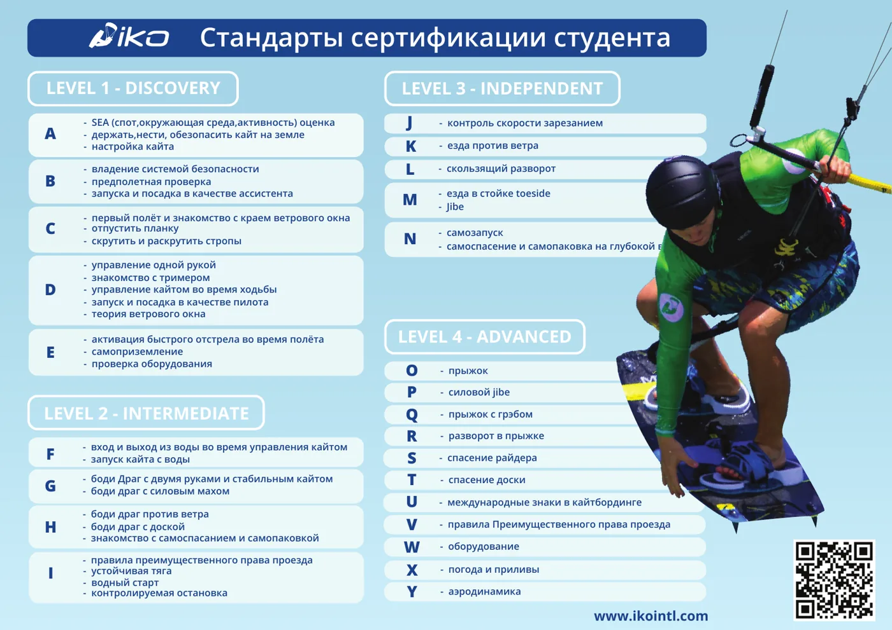
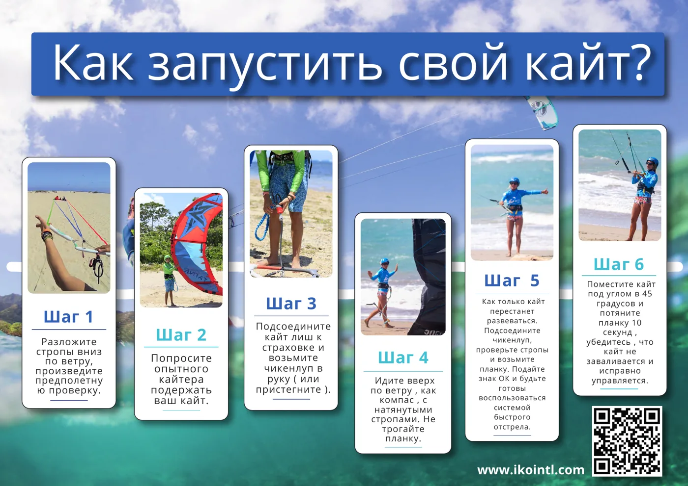
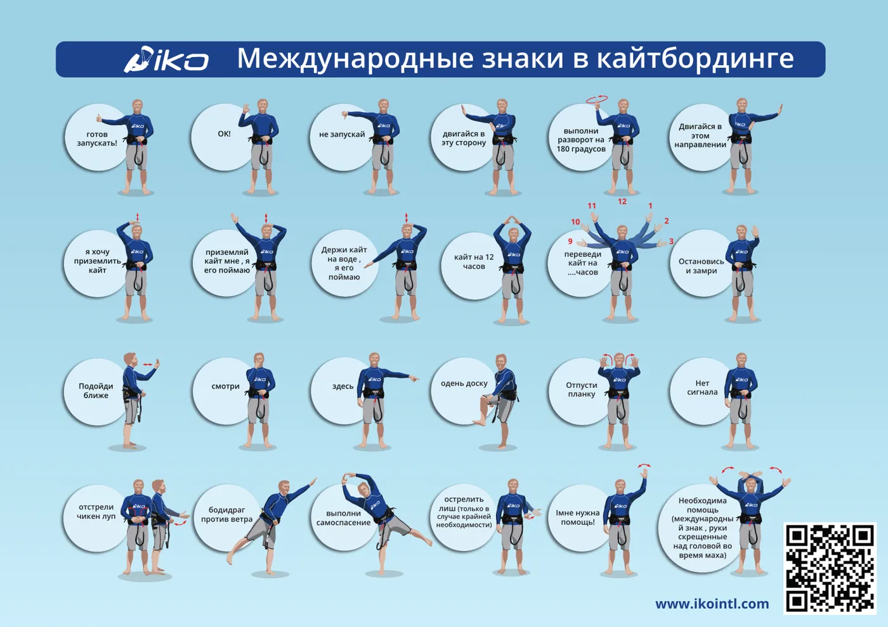
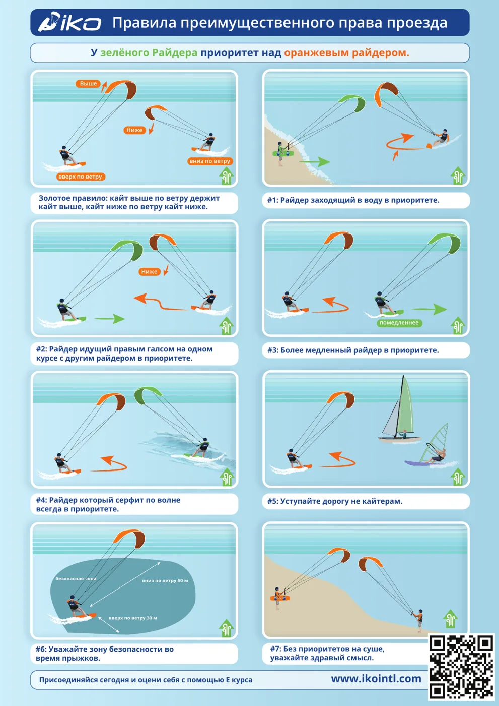
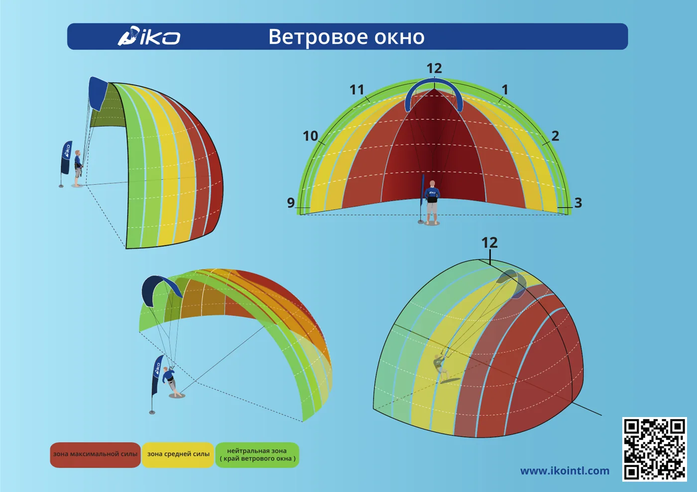

Откройте памятку, чтобы посмотреть её целиком или скачать.
Памятки

Стандарты сертификации IKO Уровни обучения от Discovery до Advanced: что нужно уметь на каждом этапе. Открыть PDF · 0.3 МБ
Как запустить кайт Шесть шагов безопасного запуска кайта с помощником. Открыть PDF · 1.5 МБ
Международные знаки в кайтбординге Жесты, которыми кайтеры общаются на берегу и в воде. Открыть PDF · 4.8 МБ
Правила приоритета на воде Кто кому уступает дорогу: главные правила права проезда. Открыть PDF · 1.5 МБ
Ветровое окно Зоны силы кайта и как в них работать. Открыть PDF · 0.5 МБХотите разобрать это с инструктором?
На занятиях мы проходим всё это на практике. Напишите даты поездки — подберём курс.
Частые вопросы
Можно ли распечатать памятки?
Да, это PDF в формате A3 — их удобно распечатать или сохранить в телефон.